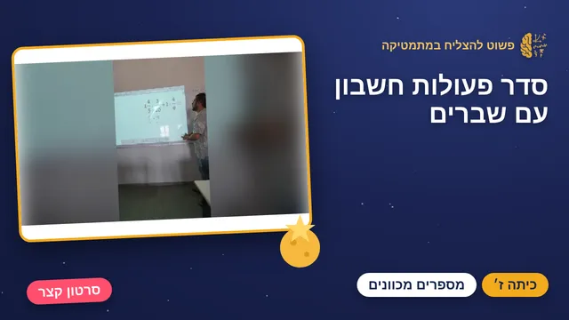

פשוט להצליח במתמטיקה › כל הנושאים › מספרים מכוונים
מספרים מכוונים – סרטוני הסבר ותרגול
2 סרטוני הסבר ותרגול בנושא מספרים מכוונים – לכיתה ז׳. כל נושא מוסבר מהקל אל הקשה: קודם הרעיון, אחר כך תרגילים, ובסוף שאלות בסגנון בגרות. הכול בחינם, בשיטת "פשוט להצליח".
רוצים לעקוב אחרי ההתקדמות?נרשמים בחינם, וכל סרטון שראיתם מסומן ✓. ממשיכים מכל מכשיר.
הצטרפות בחינם ←מספרים מכוונים – כיתה ז׳ כל הנושאים של כיתה ז׳ ←
 מערכת צירים ומספרים מכוונים – רביעים, מרחקים, מלבן והזזה
מערכת צירים ומספרים מכוונים – רביעים, מרחקים, מלבן והזזה
סדר פעולות חשבון עם שברים · סרטון קצר